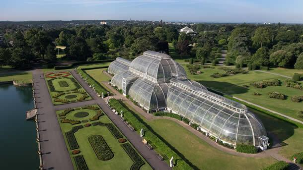

Já pensou você ter pavor de aranhas e precisar gravar uma cena cheia delas? Pois esse é o caso de Rupert Grint, o Ron, que é um verdadeiro aracnofóbico e até hoje nunca viu a cena em que ele e Harry ficam no buraco de Aragogue.
Atormentado apenas com o fato de pensar em aranhas, Rupert conseguiu transmitir seu pânico para o personagem, que está extremamente assustado e desconfortável durante a cena.
Guerreira!
A atriz Maggie Smith, que viveu a professora McGonagall, foi diagnosticada com câncer de mama e fez todo o intenso tratamento durante as filmagens do último filme da saga. Ela decidiu continuar atuando mesmo com a saúde debilitada para não decepcionar os fãs.
Inspiração botânica
J.K. disse que a inspiração para o nome da escola de Harry, “Hogwarts”, veio inconscientemente do nome de uma planta que ela viu no Kew Gardens, em Nova York.

Aquele-que-não-deve-ser-nomeado
Ao contrário da crença popular, o “T” no final de Voldemort é silenciado na pronúncia. Este nome é de origem de palavras francesas que significam “Vôo da morte”.
Produtores treinaram corujas para entregarem cartas
Uma das grandes tarefas ao trazer o mundo de Harry Potter para o grande ecrã foi o de treinar as corujas a entregar correio. O processo demorou meses, mas a equipa da produção conseguiu com que algumas corujas conseguissem entregar cartas a atores. E para dar ainda mais realismo, as cartas de aceitação para Hogwarts foram escritas à mão, como as cartas que chegaram aos Dursley no primeiro filme.
E se um trouxa encontrar Hogwarts?
Se um trouxa avistar Hogwarts, ele veria apenas uma velha ruína com um cartaz escrito “Entrada probida. Prédio perigoso”.
Ressucitar?
Magia não pode trazer pessoas mortas de volta para a vida. Portanto, não importa o quanto um bruxo se torne poderoso, ele nunca poderá ressuscitar ninguém.
Quem é o culpado pela morte da Murta que geme?
Tom Riddle foi quem matou a Murta Que Geme, pelo basilisco.
Olivaras
O miolo das varinhas de Hermione, Rony e Harry formam juntos os três miolos de varinhas Olivaras.